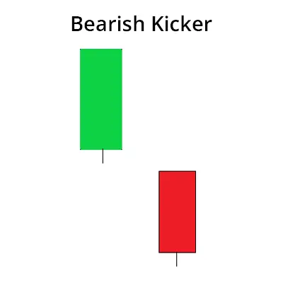

பேயரிஷ் கிக்கர் முறைமை என்பது ஒரு வணிகப்பட்டியல் முறைமை, பங்குச்சந்தையில் மேல்நோக்கு
சார்ந்துகொள்ளும் முயற்சியினை குறிப்பிடுகிறது, பின்னடையும் முயற்சியினைக் கூறுகிறது. இந்த முறைமை
இரண்டு மொழுவினால் தயாராகிறது. முதன்முதலான மொழு ஒரு மேல்நோக்கு
மொழு, இரண்டாம் மொழு ஒரு பின்னடையும் மொழு ஆகும், இது
முதன்முதலான மொழை முற்றாக அழுத்துகிறது.
பேயரிஷ் கிக்கர் முறைமை ஒரு வலுவான பின்னடையும் சுட்டிக்காட்டுகிறது. இந்தத்
முறைமையை கண்டுபிடிக்கும் போது, பங்குச்சந்தையில் பின்னடையும் முயற்சிச் செயலியாக்கப்படலாம்.